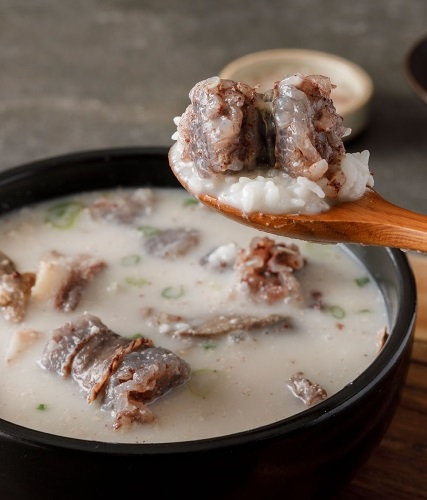
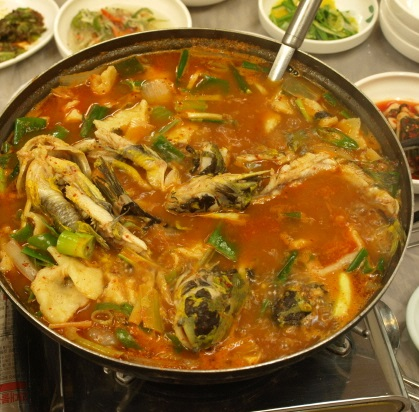
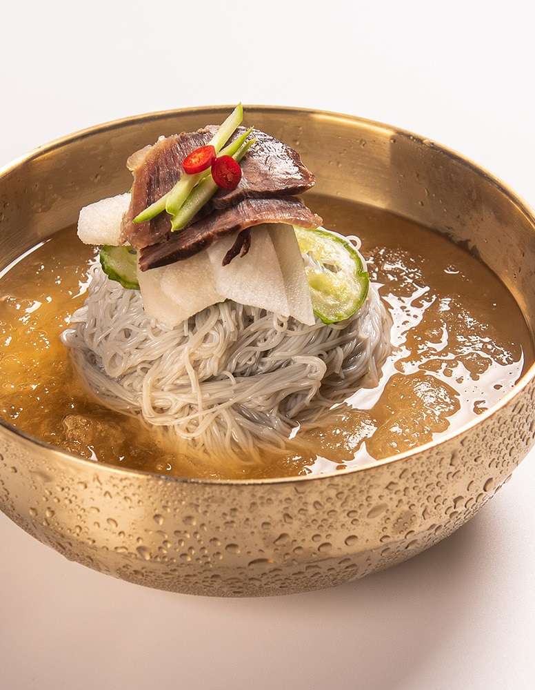

|  |  |  |
| This is soondaesoup, boiled pork intestines and meat in beef bone soup. I usually add dardegi to it and eat it spicy. Kkakdugi and kimchi are best friends with this food and are especially good for hangover. |
This is Maeuntang, which is boiled with hot seasoning, vegetables, and the remaining parts after sashimi. Usually eat it after eating sashimi, and it goes well with alcohol. |
This is Naengmyon. It is to put noodle in a soup based on vinegar and mustard. After grilling meat, it is eaten as a dessert or as a main menu in hot summer. |